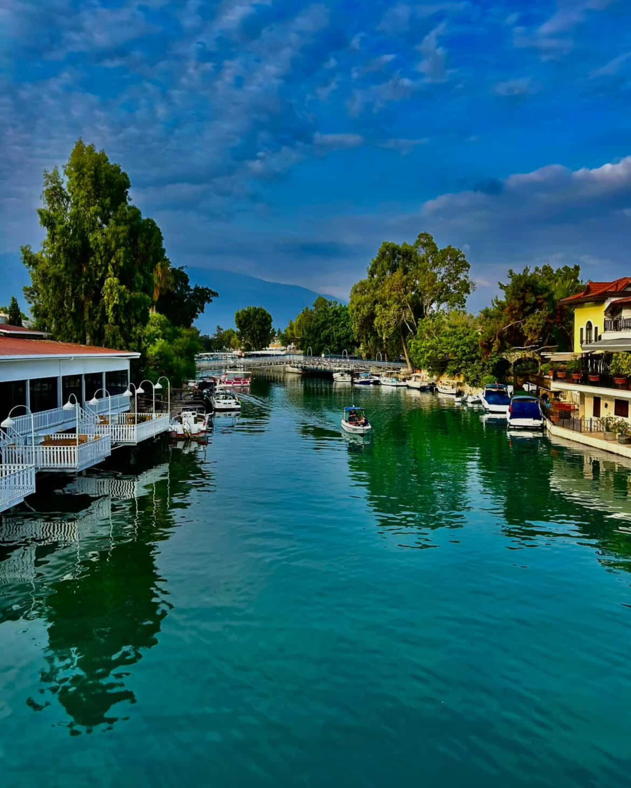
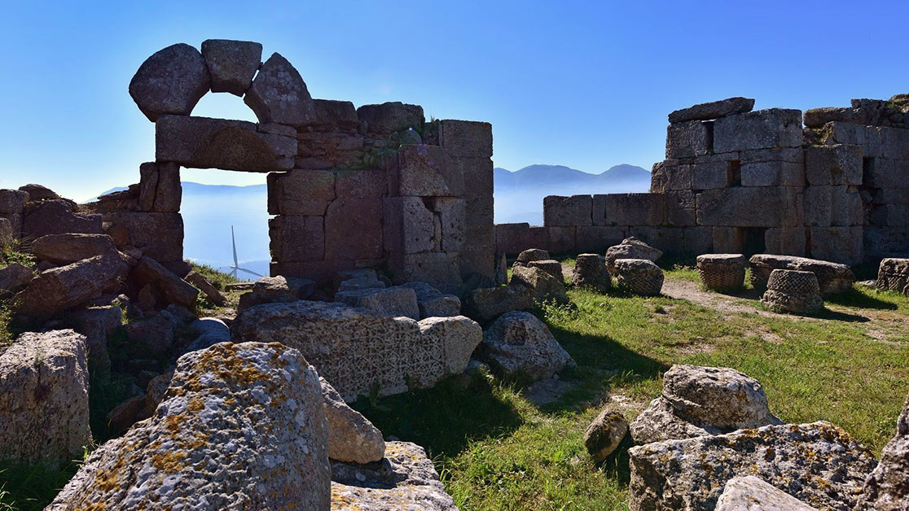
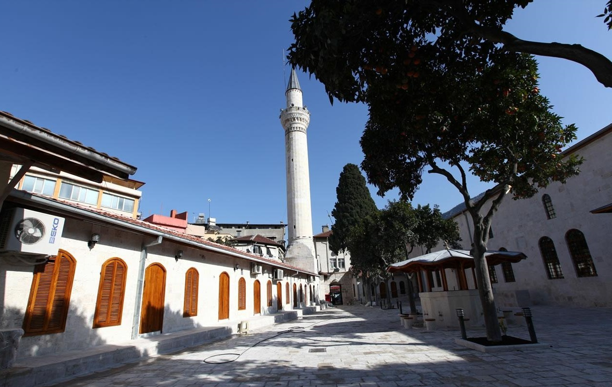
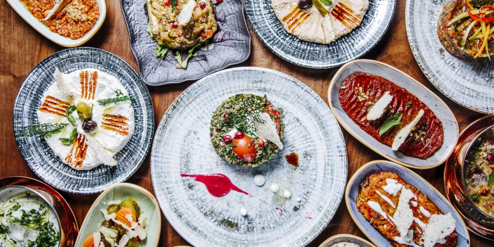
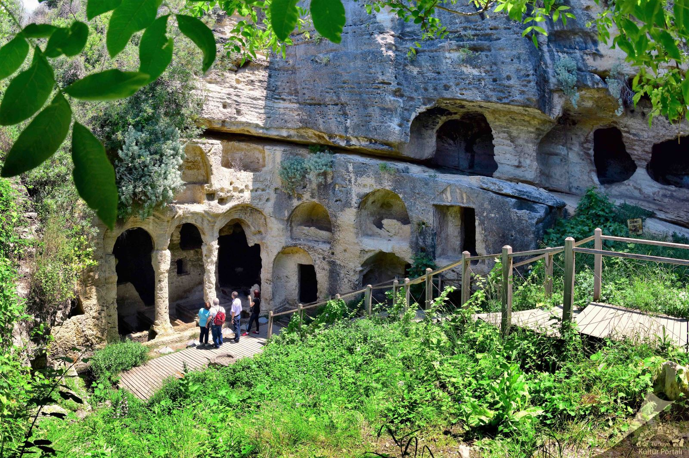
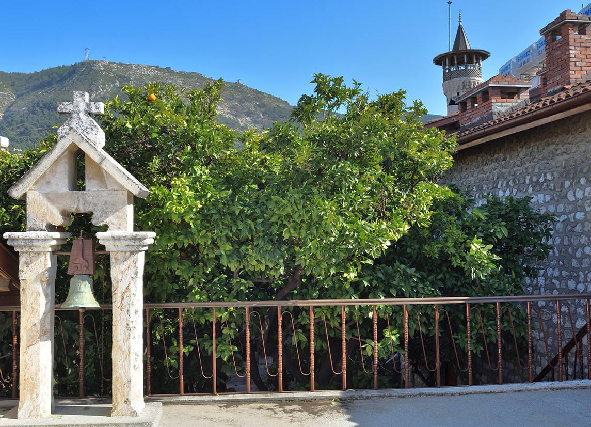
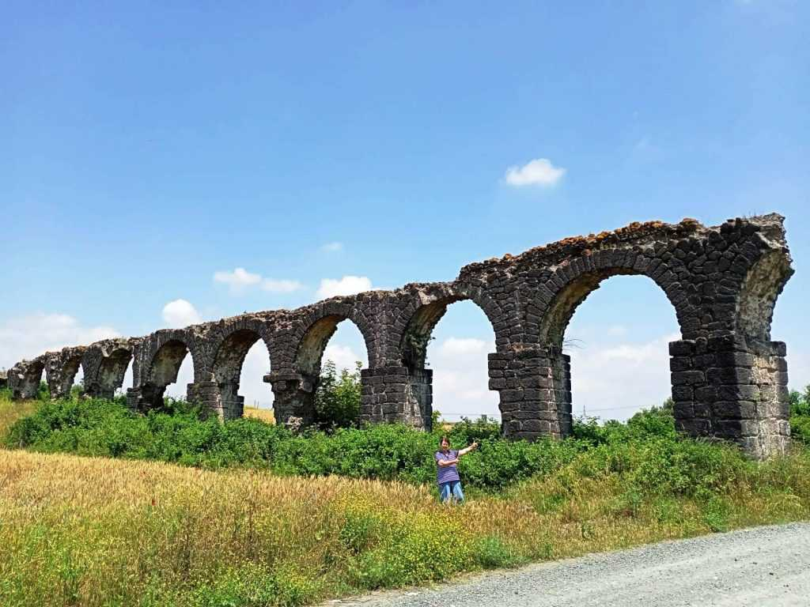
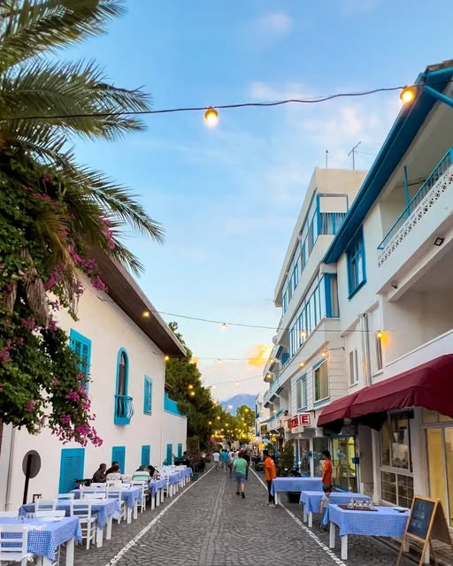
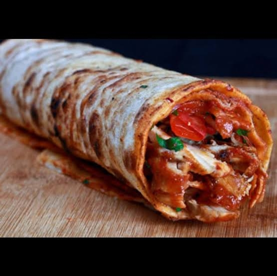
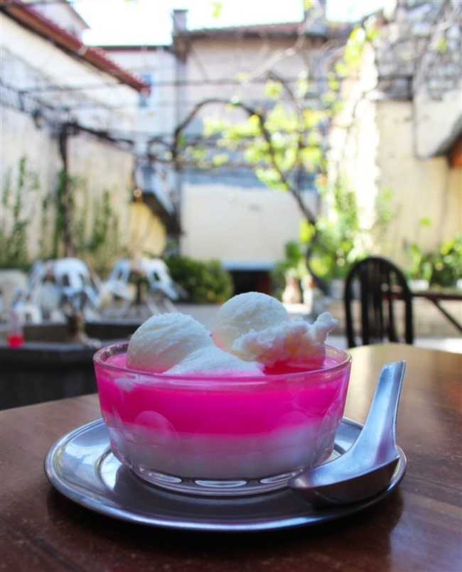

Hatay'dan Kareler






Tarihin İzinde

St. Pierre Kilisesi
Hristiyanlık kelimesinin ilk kez kullanıldığı ve dünyanın ilk mağara kilisesi olarak kabul edilen bu tarihi mekan, inanç turizmi açısından dünyadaki en önemli merkezlerden biridir.
Titus Tüneli
Roma İmparatoru Vespasian'ın emriyle dağların içine tamamen insan eliyle oyulan bu tünel, antik dönemin en büyük mühendislik harikalarından biridir.


Beşikli Mağara
Titus Tüneli'ne çok yakın bir konumda bulunan Beşikli Mağara, Roma dönemine ait kaya mezarlarını barındırır. Sütunlu ve işlemeli mimarisiyle antik çağın taş işçiliğini günümüze taşır.
Hatay Arkeoloji Müzesi
Dünyanın en büyük mozaik müzelerinden biri olan Hatay Arkeoloji Müzesi, Roma dönemine ait eşsiz mozaik tabloları ve bölgedeki kazılardan çıkarılan binlerce yıllık paha biçilemez eserleri sergilemektedir.


Hıdırbey Musa Ağacı
Rivayete göre Hz. Musa'nın toprağa diktiği asasının yeşermesiyle büyüyen, gövdesi devasa genişlikte olan bu asırlık çınar ağacı, Hıdırbey köyünde efsanelere ev sahipliği yapmaya devam ediyor.
Payas Kalesi & Sokullu Külliyesi
Haçlılar döneminden kalma kalıntıların üzerine Osmanlı mimarisiyle inşa edilen görkemli Payas Kalesi ve hemen yanındaki Sokullu Mehmet Paşa Külliyesi, Mimar Sinan'ın dokunuşlarını taşıyan tarihi bir komplekstir.


Samandağ Çevlik Sahili
Dünyanın en uzun 2. kumsalı olan Samandağ Sahili, hem deniz turizmi hem de incecik kumuyla nesli tükenmekte olan Caretta Caretta deniz kaplumbağalarının üreme alanlarından biridir.
Habib-i Neccar Camii
Anadolu sınırları içerisinde inşa edilen ilk cami olma özelliğini taşıyan bu şaheser, Hatay'ın hoşgörü kültürünün en büyük sembolüdür.


Tarihi Uzun Çarşı
Antakya'nın kalbinin attığı yer! Baharat kokularının birbirine karıştığı, dar sokaklarında kaybolmanın bile keyifli olduğu bu tarihi çarşı şehrin ticaret merkezidir.
Antakya Katolik Kilisesi
Antakya Türk Katolik Kilisesi, şehrin tarihi Kurtuluş Caddesi üzerinde yer alan ve 19. yüzyılda Sultan Abdülmecid’in izniyle inşa edilen köklü bir ibadethanedir. İki eski Antakya evinin birleşimiyle oluşan mimarisi, geleneksel taş işçiliği ve huzurlu avlusuyla dikkat çeker. "Hoşgörü Üçgeni"nin önemli bir parçası olan kilise, günümüzde halen aktif olarak hizmet vermektedir.


İssos Antik Kenti (Epiphaneia)
Büyük İskender ile Pers İmparatoru Darius'un o destansı savaşına sahne olan, tarihin akışını değiştiren topraklara ayak basmaya hazır mısınız? Erzin ilçesindeki gizlenmiş bu antik kentte gezerken, asırlık su kemerleri ve binlerce yıllık mozaikler arasında adeta zamanda yolculuk yapacak, o eski görkemli çağların heyecan verici fısıltılarını duyacaksınız.
Eski Arsuz Sokakları
Begonvillerle süslenmiş tarihi taş evlerin arasından süzülen daracık Arsuz sokaklarında yürümek, adeta bir masalın içinde kaybolmak gibidir. Eski dokusunu hiç kaybetmemiş bu sevimli sahil kasabasında denizin iyot kokusu ve o sıcacık Akdeniz rüzgarı yüzünüze vururken, buradan hiç ama hiç ayrılmak istemeyeceksiniz.

UNESCO Onaylı Lezzetler
Hatay Künefesi
Tel kadayıfın, Hatay'a özgü o eşsiz tuzsuz peynirle buluşup bakır tepsilerde ağır ağır kızardığı efsanevi tatlı. Üzerine dökülen sıcak şerbeti ve uzadıkça uzayan peyniriyle, Hatay mutfağının tüm dünyada bilinen en tatlı gururudur.


Tepsi Kebabı
Satırla çekilmiş kıymanın sarımsak, maydanoz ve baharatlarla yoğrulup tepsiye basıldığı, ardından taş fırınlarda odun ateşinde pişirildiği bir lezzet şöleni. Suyuna sıcak tırnak pide banarak yemenin keyfi bambaşkadır.
Antakya Kömbesi
İçerisine katılan tam 7 farklı özel baharat karışımı ve üzerine serpilen susamıyla, ağızda dağılan yapısıyla ünlü yöresel bir kurabiye. Bayramların ve özel günlerin vazgeçilmezi olan bu lezzet, uzun süre bayatlamadan tazeliğini korur.


Hatay Soslu Dürüm
Özel baharatlarla harmanlanmış etin veya tavuğun, odun ateşinde pişen incecik lavaşla buluştuğu efsanevi lezzet. İçine bolca sürülen o meşhur salçalı sosu, taze yeşillikleri ve sıcak servis edilmesiyle Hatay sokak lezzetlerinin tartışmasız en popüler ve doyurucu olanıdır.
Tarihi Affan Kahvesi
Eski Antakya sokaklarını gezerken yorulduğunuzda sığınacağınız en sıcak, en samimi limandır burası. İçeri adım attığınız an o ahşap sandalyeler, eski taş duvarlar ve içerideki neşeli sohbetler sizi yıllar öncesine, büyüklerinizin zamanına götürür. Hatay'ın ruhunu en güzel yansıtan, dostlukların pekiştiği harika bir mekandır.


Süvari Kahvesi
Hatay'a gelip de kahveyi fincanda içmek olmaz! Yörenin kendine has bir kültürü olan "Süvari", çifte kavrulmuş Türk kahvesinin ince belli çay bardağında sunulmuş halidir. Hem kahvenin o yoğun aromasını daha sert hissettirir hem de sohbetinize ayrı bir nostaljik keyif katar.
Meşhur Haytalı Tatlısı
Sakın "bici bici" ile karıştırmayın! Altında mis gibi gül suyu şerbeti, ortasında nefis muhallebisi ve en üstünde özel ev yapımı dondurmasıyla Haytalı, sıcak Hatay günlerinde içinizi ferahlatan, kaşık kaşık yemeğe doyamayacağınız efsanevi bir tatlıdır.
